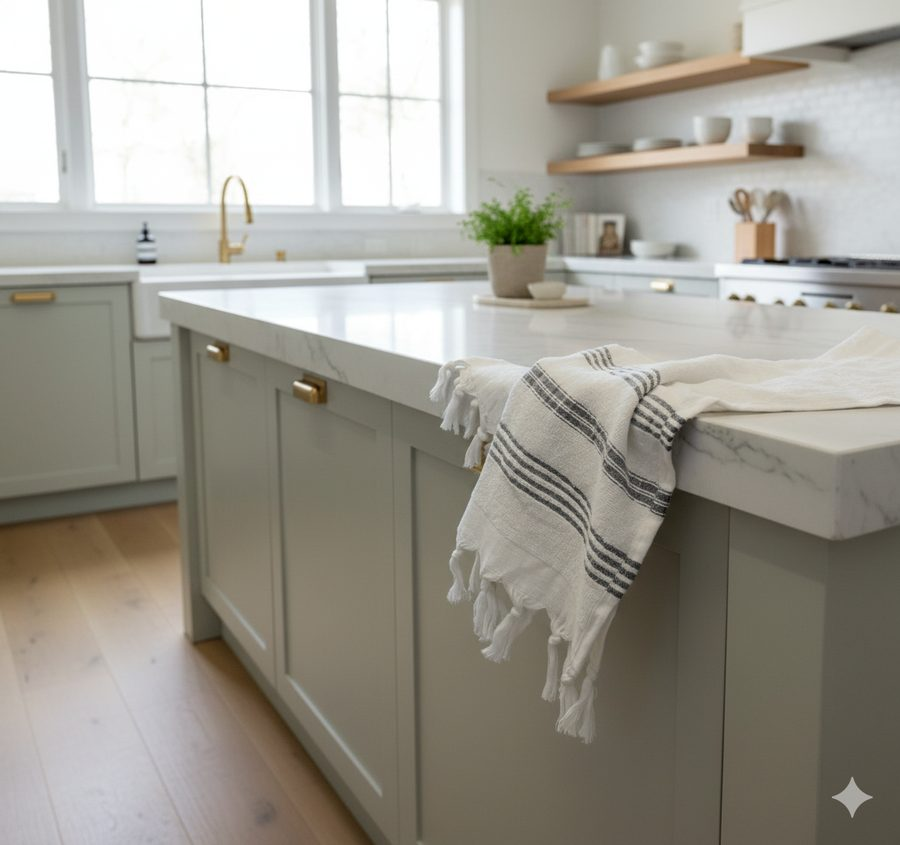

A regra de ouro: temperatura e tempo
Antes de qualquer técnica específica, há duas regras que governam o tratamento de qualquer mancha em pano de prato de algodão:
Regra 1: Água fria primeiro, sempre. A maioria das manchas — especialmente as proteicas (ovo, leite) e as corantes (frutas, café) — é fixada permanentemente pelo calor. Água quente "cozinha" a mancha dentro da fibra antes que você consiga removê-la. Use água fria ou temperatura ambiente no primeiro tratamento.
Regra 2: Quanto mais rápido, maior a chance. Uma mancha tratada em 1 minuto sai em 90% dos casos. A mesma mancha tratada após 30 minutos já teve tempo de secar e penetrar nas fibras, exigindo técnicas mais agressivas. Após 24 horas, algumas manchas se tornam permanentes mesmo com tratamento correto.
Separe: sabão neutro (ou detergente de louça), sal grosso, bicarbonato de sódio, vinagre branco e limão. Esses ingredientes resolvem 95% das manchas de cozinha sem produtos agressivos que danificam o tecido.
Mancha de óleo e gordura
A mancha de óleo é a mais frequente em panos de cozinha — e a mais mal tratada. O erro universal: passar água quente imediatamente. O calor expande a fibra e absorve o óleo mais fundo, fixando a mancha.
Método correto para óleo fresco
- Absorva o excesso com papel toalha (não esfregue — isso espalha)
- Aplique sal grosso diretamente sobre a mancha e deixe absorver por 2 minutos
- Sacuda o sal e aplique sabão neutro ou detergente de louça concentrado
- Com os dedos, trabalhe o sabão suavemente na área manchada em movimentos circulares
- Deixe agir por 5 a 10 minutos
- Enxágue em água fria e lave normalmente a 40°C
Para manchas de óleo antigas ou secas
Se a mancha já secou, o tratamento exige um passo extra: aplique uma pasta de bicarbonato de sódio e detergente de louça (proporção 2:1), cubra a mancha completamente e deixe agir por 30 minutos antes de enxaguar em água fria e lavar normalmente. Para manchas de óleo vegetal ou azeite muito antigas, um pré-tratamento com álcool isopropílico 70% (farmácia) pode dissolver a gordura polimerizada antes do tratamento com sabão.
Mancha de café e chá
Café e chá contêm taninos — compostos orgânicos que se ligam às fibras de algodão com calor. A mancha de café é marrom e pegajosa quando fresca, e castanho-acinzentada quando seca. A do chá é levemente amarelada.
Mancha fresca (até 30 minutos)
- Enxágue imediatamente com água fria corrente — não esfregue
- Aplique sal grosso sobre a mancha ainda úmida e deixe agir por 5 minutos
- Enxágue novamente e lave a 40°C com detergente normal
Mancha seca ou antiga
- Embeba o pano em vinagre branco diluído (1 parte vinagre para 2 partes de água fria) por 15 a 30 minutos
- Sem enxaguar, aplique bicarbonato de sódio sobre a área (a reação espumante ajuda a soltar a mancha)
- Após a espuma secar, escove suavemente e lave a 40°C
Vinagre branco é o melhor aliado para manchas de taninos. O ácido acético desfaz a ligação química entre o tanino e a fibra de algodão sem danificar o tecido.
Pano amarelado — como recuperar
O amarelamento de panos brancos tem duas causas principais: oxidação das fibras com o tempo (processo natural acelerado por temperatura e luz) e acúmulo de resíduos minerais da água dura e do detergente não enxaguado completamente.
Para panos brancos: limão + sol
- Embeba o pano em água fria com suco de 1 a 2 limões espremidos por litro de água
- Deixe de molho por 30 minutos
- Sem enxaguar, estique o pano ao sol (o calor + ácido cítrico tem efeito clareador)
- Deixe secar completamente ao sol, depois lave normalmente a 40°C
Para panos coloridos: bicarbonato na lavagem
Adicione 1 colher de sopa de bicarbonato de sódio diretamente no tambor da máquina junto com o detergente normal. O bicarbonato neutraliza os minerais da água que causam o amarelamento e suaviza as fibras naturalmente. Nunca use água sanitária em panos coloridos — o cloro destrói os corantes de forma irreversível.

Manchas de frutas e sucos
Frutas vermelhas (morango, amora, framboesa) e sucos coloridos (beterraba, uva, romã) contêm antocianinas — pigmentos naturais que se ligam rapidamente às fibras. São manchas visualmente impactantes mas mais fáceis de remover do que parecem quando tratadas imediatamente.
- Imediatamente: aplique sal grosso abundante sobre a mancha fresca (o sal absorve o suco antes que penetre na fibra)
- Sacuda o sal e enxágue com água fria corrente — nunca quente
- Se a mancha persistir: aplique vinagre branco puro, deixe agir por 5 minutos e enxágue
- Lave a 40°C normalmente
Para manchas secas de frutas vermelhas: embeba em água fria com água oxigenada 10V diluída (1 parte para 4 de água) por 20 minutos antes de lavar. Essa combinação é eficaz e segura para panos coloridos, ao contrário do cloro.
Molho de tomate e especiarias
Molho de tomate, curry, açafrão e páprica são manchas de pigmento oleoso — uma combinação de corante e gordura que precisa de tratamento em duas etapas: primeiro remover a gordura, depois tratar o pigmento.
Método em duas etapas
- Etapa 1 (gordura): retire o excesso de molho com colher. Aplique detergente de louça concentrado e trabalhe suavemente. Enxágue em água fria.
- Etapa 2 (pigmento): para manchas que persistirem, aplique pasta de bicarbonato de sódio + água sobre a área, cubra com filme plástico e deixe agir por 20 a 30 minutos. Enxágue e lave a 40°C.
Para manchas de açafrão e curry (pigmentos extremamente persistentes): após o tratamento acima, exponha o pano ainda úmido ao sol por 2 a 3 horas. A luz solar tem efeito fotoclareador nos pigmentos amarelos dessas especiarias.
Pano encardido — limpeza profunda
O "encardimento" não é uma mancha única — é o acúmulo de gordura, minerais da água, resíduo de detergente e sujeira difusa que torna o pano opaco, com aparência cinza e textura ligeiramente pegajosa mesmo depois da lavagem.
Receita de limpeza profunda
- Dissolva 4 colheres de sopa de bicarbonato de sódio em 2 litros de água fria
- Embeba os panos por 2 a 3 horas (ou de um dia para o outro para casos graves)
- Adicione 1 xícara de vinagre branco ao enxágue final (a reação limpa os resíduos de detergente)
- Lave a 40°C com detergente normal
Adicionar meia xícara de vinagre branco ao enxágue final uma vez por mês impede o acúmulo de minerais e mantém os panos mais brancos e macios naturalmente. O cheiro do vinagre desaparece completamente ao secar.
O que nunca fazer com mancha em pano de prato
Alguns erros são mais danosos do que a própria mancha:
- Água sanitária em panos coloridos ou jacquard: destrói os corantes e as fibras coloridas do padrão de forma irreversível. Use apenas em panos 100% brancos e lisos, muito diluída.
- Água quente em manchas frescas de proteína (ovo, leite, sangue): fixa a mancha permanentemente na fibra.
- Esfregar com força: não remove a mancha — apenas espalhá-la e embuti-la mais fundo na fibra. Movimentos suaves e produtos com tempo de ação são sempre mais eficazes.
- Secar ao sol com a mancha ainda presente: o calor do sol fixa pigmentos de cor assim como a água quente. Trate a mancha completamente antes de expor ao sol.
- Misturar alvejante com vinagre: a combinação produz ácido acético clorado, irritante e ineficaz. Use um ou outro, nunca juntos.
Cuidados especiais para manchas em panos jacquard
O padrão jacquard é tridimensional — o relevo é criado pela estrutura do fio, não por uma tinta sobre a superfície. Isso tem uma implicação importante para o tratamento de manchas: nunca esfregue diretamente sobre o relevo do padrão.
- Use um pincel de cerdas macias para aplicar o agente de limpeza com precisão na área manchada
- Movimentos no tratamento: sempre de fora para dentro (para não espalhar a mancha para além do padrão)
- Enxágue com pressão suave de água fria, não com esfregão
- Para manchas no relevo do jacquard, deixe o agente (bicarbonato em pasta, por exemplo) agir mais tempo — 15 a 20 minutos — em vez de compensar com mais força mecânica
Perguntas frequentes
Panos que resistem
ao uso diário.
Algodão egípcio de fibra longa absorve mais e solta manchas com mais facilidade que panos de fibra curta. Um investimento que se paga em peças que duram anos.
Ver coleção completa